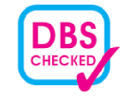
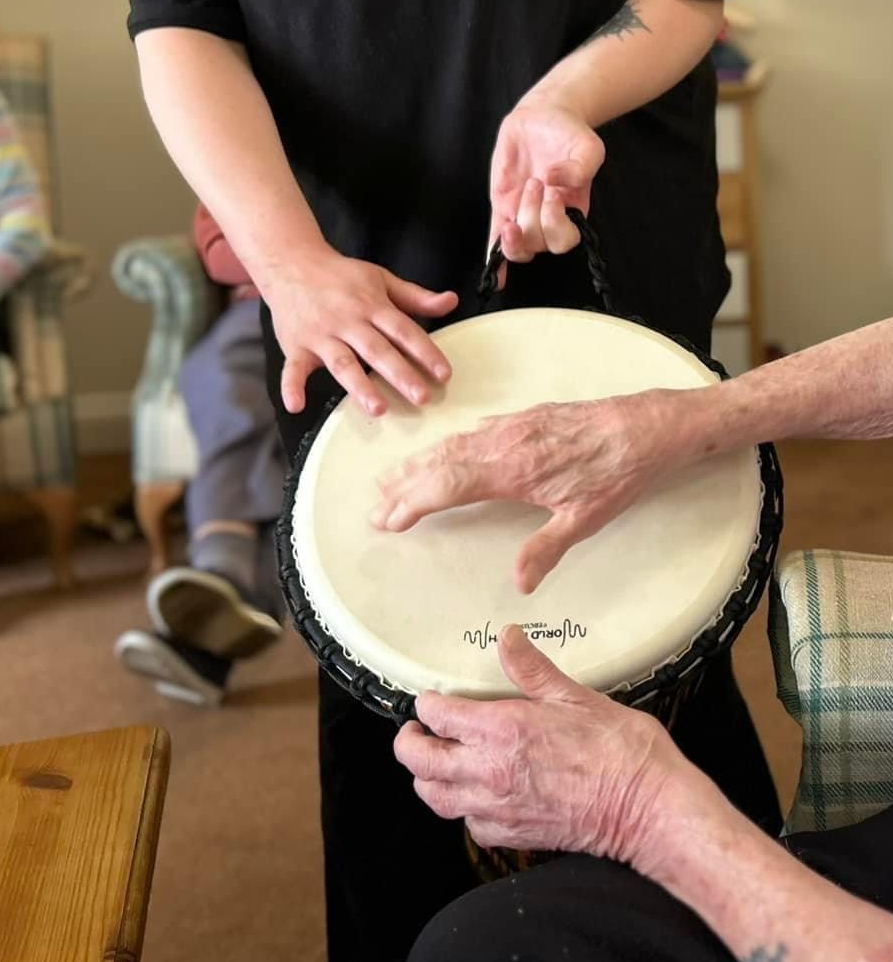

Creative, person-centred music therapy in Gloucestershire — supporting children, adults, and older adults through the power of music. Take the first step with a therapist experienced in the journey.
Get in TouchHello, I'm Georgia
I'm a HCPC-registered Music Therapist offering a compassionate and creative approach to supporting clients through music. My work is grounded in person-centred working, where each individual's needs, strengths, and experiences help guide the therapeutic process.
Over several years, I have gained experience supporting a wide range of people across different settings. I have delivered music therapy for children and adults with complex and additional needs, as well as adults in psychiatric and forensic services. I have also worked within care homes, supporting older adults living with dementia.
Through my longstanding work in an SEN school, I have developed confidence in using a range of low- to high-tech communication methods and sensory integration approaches. These approaches help support individuals with multi-sensory impairments to explore and access the world around them.
I believe that working closely with families, carers, and other professionals is essential in creating the most supportive and effective approach for each of my clients.

Using words can be difficult.
Music is our universal language.
“Music Therapy is an established psychological clinical intervention, delivered by HCPC registered music therapists to help people whose lives have been affected by injury, illness or disability through supporting their psychological, emotional, cognitive, physical, communicative and social needs.”
— British Association of Music Therapy, 2026

If you're considering music therapy for yourself or someone else, it's important to remember — there is no right or wrong, no expectations, and no need for any previous musical knowledge or experience.
Music Therapy
- Use music to achieve clinical goals
- Focus on developing non-musical skills
- Emphasis on improvisational music-making
- Emphasis on treatment and rehabilitation
- Music therapists hold an MA in Music Therapy
- No pressure to ‘achieve’
- Therapeutic relationship and time is paramount
Music Lessons
- Use music to educate (instrumental, performance, technical skills)
- Focus on developing musical skills
- Emphasis on note learning and reading
- Emphasis on knowledge
- Music teachers often (but not always) hold a PGCE
- Goal, performance and achievement orientated
Working within a psychodynamic framework, my work brings in elements of talking therapy, musical improvisation and play, emotive songwriting, lyric analysis, as well as song sharing and listening together.
Musical Improvisation & Play
Play is a special place for exploration, development and well-being across all ages. Within music therapy, play can be found by experimenting with different sounds, rhythms, dynamics and styles. Music becomes a shared game to connect, communicate and build confidence without words.
Within the musical improvisation, emotions are expressed and feelings are encapsulated by the feeling of the improvisation created.
Songwriting & Lyric Analysis
Songwriting in therapy offers a creative way to express thoughts, feelings, and personal stories. Together we might write new lyrics, adapt an existing song, or explore themes that matter to you.
This process can help you make sense of experiences, build confidence, and find your voice — literally and metaphorically. Lyric analysis can also be part of this work, using the words of familiar songs as a starting point for reflection, discussion, and emotional processing.
Both approaches are flexible and can be adapted for different ages, abilities, and therapeutic goals. Above all, they provide a creative pathway for clients to explore who they are and how they feel — supported every step of the way.
Listening & Song Sharing
Song listening and song sharing are gentle yet meaningful ways for clients to connect with themselves and others during music therapy. Clients may listen to music chosen by the therapist or bring in songs that hold personal significance. Together, they explore the emotions, memories, and associations that arise, using the music as a supportive backdrop for reflection and conversation.
Sharing songs can help clients express parts of their identity, communicate feelings that may be hard to put into words, or simply enjoy a moment of connection. Listening to music in a therapeutic setting can also promote relaxation, grounding, and emotional regulation, offering a safe space to pause and tune into the present moment.
At its heart, song listening and sharing create opportunities for clients to feel heard, understood, and connected through the music that matters to them.
Supporting people of all ages across a range of settings
Children & Young People
Supporting children with complex and additional needs, including those in SEN schools, using communication methods and sensory integration approaches.
Adults
Working with adults with complex and additional needs, as well as those in psychiatric and forensic services, offering a safe space for expression and connection.
Older Adults & Dementia Care
Supporting older adults living with dementia within care home settings, using music to promote connection, comfort, and moments of joy.
SEN Schools
Longstanding experience working in special educational settings, using low- to high-tech communication and sensory approaches to help individuals explore and access the world around them.
Beginning your music therapy journey
Book a free call
Schedule a relaxed, no-obligation introduction call to chat about your needs and find out how music therapy could help.
Initial consultation
We'll arrange an initial assessment to understand your needs, goals, and circumstances. This is a chance for you to ask questions and for us to explore whether music therapy is the right fit.
Begin sessions
Sessions are tailored to each individual and typically take place weekly. Together we'll review progress and adapt the approach as needed, always keeping the client at the centre.
Testimonials
“Georgia has a wonderful ability to connect with my son. Since starting music therapy, he's more engaged, more communicative, and visibly happier. We've seen changes we never expected.”
“Music therapy gave me a way to express things I couldn't put into words. The sessions were a safe space where I could just be myself, and Georgia made me feel completely at ease from the very first session.”
“We've seen a remarkable difference in our residents since Georgia began working with us. There's more laughter, more interaction, and some residents who rarely engage are now singing along and smiling.”
Common questions about music therapy
How long is a music therapy session?
Sessions are typically 30 to 60 minutes, depending on the individual's needs and the setting. Children's sessions are often shorter, while adult sessions may be longer. The length is always tailored to what works best for the client.
How many sessions will be needed?
This varies for every individual. Some people benefit from a short block of sessions (6–12 weeks), while others engage in longer-term therapy. We'll discuss what feels right during the initial consultation and review progress regularly together.
Do I need to be able to play an instrument or sing?
Absolutely not. Music therapy requires no musical skill, experience, or training. The focus is on using music as a tool for expression and connection — not performance. You don't need to be ‘musical’ to benefit.
Can a parent or carer attend sessions?
Yes, in many cases families and carers are welcome and encouraged to be part of the process. This is especially true for younger children or individuals who feel more comfortable with a familiar person present. We can discuss what works best for each situation.
Is music therapy available on the NHS?
Music therapy is recognised by the NHS and is sometimes funded through local services, schools, or care settings. In other cases, sessions are privately funded. I'm happy to discuss options and help you explore what may be available.
Where do sessions take place?
Sessions can take place in a variety of settings, including schools, care homes, community spaces, or a dedicated therapy room. I work across Gloucestershire, covering areas including Cheltenham, Gloucester, Stroud, Cirencester, and the Forest of Dean. Please get in touch to discuss your location.
Who can refer someone for music therapy?
Anyone can make a referral or self-refer. Referrals commonly come from parents, carers, teachers, SENCOs, social workers, GPs, and other healthcare professionals. You don't need a formal diagnosis to explore whether music therapy could help.
Music therapy across Gloucestershire
I offer sessions in schools, care homes, community settings, and dedicated therapy spaces across the county. Areas covered include:
- Cheltenham
- Gloucester
- Stroud
- Cirencester
- Tewkesbury
- Forest of Dean
- Cotswolds
Can't see your area? Please get in touch — I may still be able to help.
Interested in Music Therapy?
If you'd like to find out more about music therapy, discuss a referral, or have any questions, please don't hesitate to get in touch.
Book a Free Introduction CallMessage sent
Thank you for getting in touch. Georgia will get back to you as soon as possible.